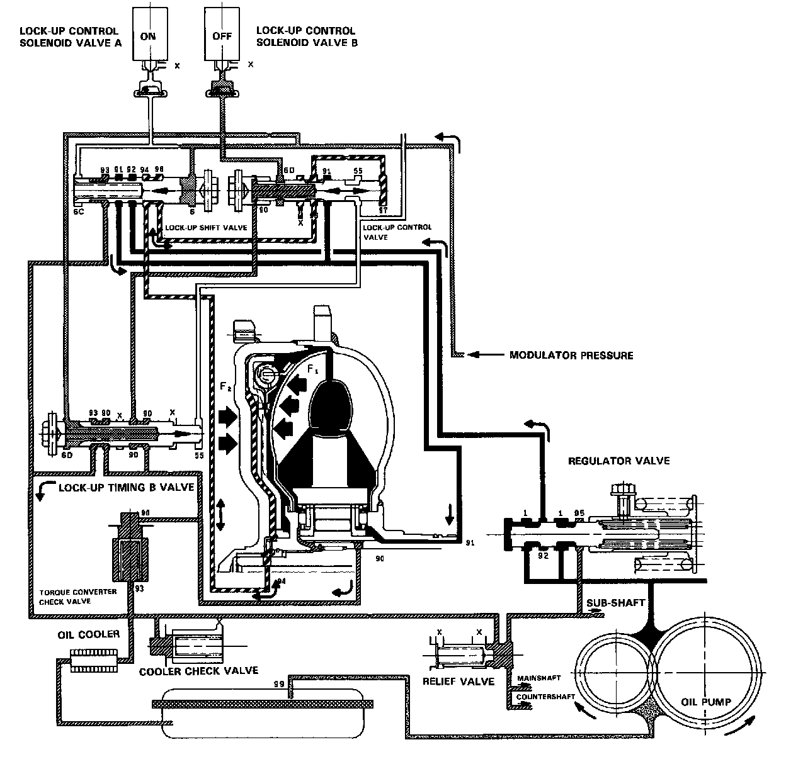

Partial Lock-Up
PARTIAL LOCK-UP
Lock-up Control Solenoid Valve A: ON Lock-up Control Solenoid Valve B: OFF
The TCM switches the solenoid valve A on to release the modulator pressure in the left cavity of the lock-up shift valve. The modulator pressure in the right cavity of the lock-up shift valve overcomes the spring force, thus the lock-up shift valve is moved to the left side.
The modulator pressure is separated to the two passages:
F1: Torque Converter Inner Pressure: enters into right side-to engage lock-up clutch
F2: Torque Converter Back Pressure: enters into left side-to disengage lock-up clutch
The back pressure (F2) is regulated by the lock-up control valve whereas the position of the lock-up timing B valve is determined by the throttle B pressure, tension of the valve spring and pressure regulated by the modulator. Also the position of the lock-up control valve is determined by the back pressure of the lock-up control valve and torque converter pressure regulated by the check valve. With the lock-up control solenoid valve B kept off, the modulator pressure is maintained in the left end of the lock-up control valve; in other words, the lock-up control valve is moved slightly to the left side. This slight movement of the lock-up control valve causes the back pressure to be lowered slightly, resulting in partial lock-up.
NOTE: When used, "left" or "right" indicates direction on the flowchart.